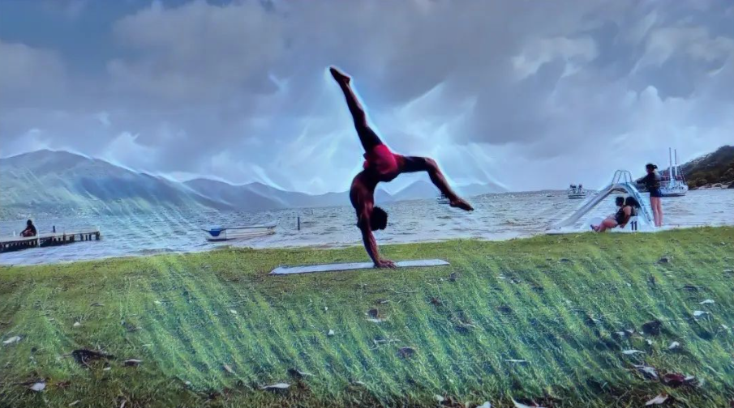
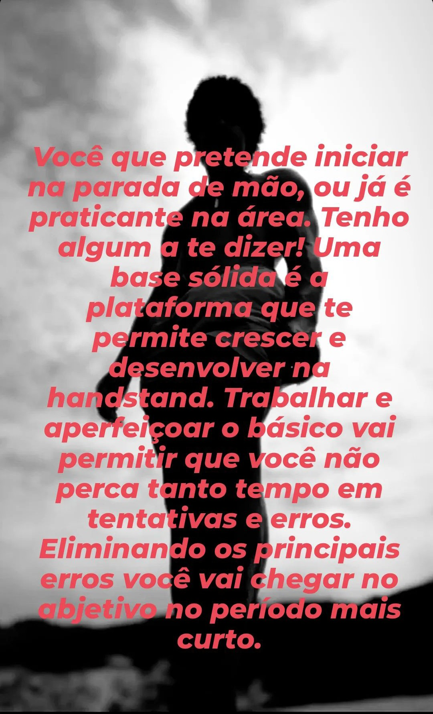

Força física só tem valor quando aplicada com inteligência e sabedoria...
Olá! Sou o Adriano. Minha missão é guiar você pelo processo do handstand com inteligência, focando na qualidade do movimento: alinhamento, controle e mobilidade.
Esqueça o esforço bruto sem técnica. Meu método foca em progresso inteligente: alinhamento corporal, respiração e treino específico de força funcional.
Mudar para um foco em qualidade de movimento em vez de apenas "tentar" me fez superar dores e limitações no movimento que me travavam há anos.
Veja como eram meus movimentos há 2 anos e meio: falta de flexibilidade e técnica precária.
Após aplicar o método com mais inteligência e sabedoria, o controle se tornou absoluto.
Abaixo, demonstro o treinamento técnico necessário para evoluir de forma consciente, focando em mobilidade e estudo do movimento.
"A handstand é mais que força, é uma conexão consciente com seu corpo."
